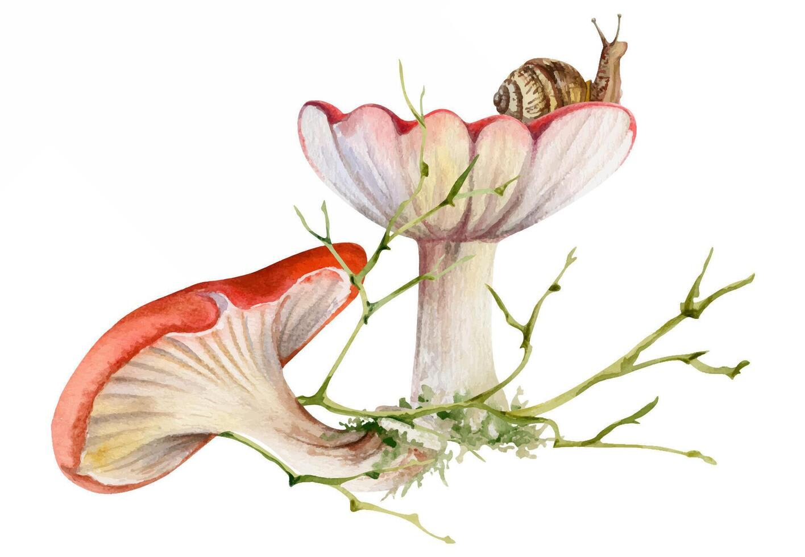

Native Mushrooms of Pennsylvania
This website is a short overview of some species of edible native Pennsyvanian mushrooms.
View Species Contact Page
Best times to look
- April and May are popular months for spring mushroom activity.
- Summer rain and humidity often bring more growth in forested areas.
- Cool autumn forests are the easiest places to spot fungi on logs, stumps, and fallen leaves.
Why mushrooms matter
- Many fungi break down dead wood and leaf litter.
- Some help recycle nutrients in forest ecosystems.
- Edible mushrooms are rich in vital nutrients.
- Some edible mushrooms are proven to cause neurogenesis (The creation of new neurons) within humans!
Important safety note
This website is for education only. Never eat a wild mushroom unless it has been identified by a trained expert.
Quick quiz
Which season are you most likely to find morels?